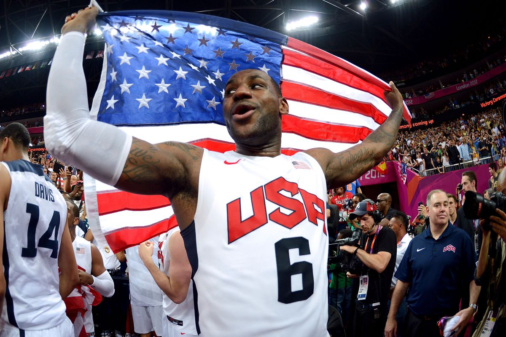

奥运首战，美国队的基本盘和问题
说一些提到的不多的点。
美国队的基本盘是什么？
想要回答这个问题，要先明白的是：什么是基本盘？
答案是：球队最基础的、面对任何对手都要拿出来的东西。如果基本盘被抑制，球队会一泻千里。虐菜时，基本盘会稳定拉开分差。势均力敌时，基本盘不能出错，在此基础上做好其他的东西赢下比赛。劣势时，绝大部分是因为基本盘没打出来。
所以基本盘的特点：1. 可重复性。2. 虐菜时尤为明显。3. 往往在阶段性拉开分差时明显体现出来。
非基本盘的内容则相反：1. 很可能不可重复。2. 对手水平一般时往往看不出来，也不需要。3. 基本在球队遇到困难的时候出现。
今天的比赛，非常典型。美国队什么时候真正拉开分差的？第三节后半段到第四节初，约基奇逐渐体力下降减少进攻直至下场休息，塞尔维亚进攻开始受阻，美国队强大的对球施压迅速制造了对方大量的打铁和失误，然后咣咣反击得手。对方随着进攻受阻被反击，逐渐心态变化，阵地防守也开始漏人，比赛就此一泻千里。
这是过去十几二十年，奥运会夺金的老美国队的经典打法：防守反击。


詹姆斯布克外扩压迫，霍乐迪错位卡板，库里拼下篮板，詹姆斯光速反击。出于图片大小的考虑，回合我截成了两段。后文也会有类似情况。


浓眉站位顶住，詹姆斯先是收缩逼迫约基奇出球，然后迅速卡住位置防下了定点突破，最后反击一条龙一气呵成。
像这种球，因为一防一攻就是完整的一个来回，拿到的分都是净胜分。
老是有的人觉得这种球简单。但是篮球场上简单球和难度球的比例不是常数。不是说简单球打多了队友简单球就变少。相反，把潜在的简单球兑现，是提升整体进攻效率最高的办法。这么打，其余人的简单球只会变多不会变少。
把聪明分变笨分，叫聪明。反过来那才叫笨。


我最喜欢的一个防守回合。浓眉篮下一柱擎天，基本在队友夹击到来前封死了约基奇所有的快速出手可能。热巴折返于篮下和外围之间，夹击完约基奇又去外围轮转。约基奇第一攻被完全防死，第二次尝试时进攻时间所剩无几，又被及时的夹击破坏。外线小白华子次次精准的预判轮转位置，没有给对手任何的外线空挡。倒是杜兰特最后一下轮转慢了，但是依靠天赋强行干扰了对方。

华子不要命的追防破坏了第一波机会，杜兰特换防找错了人，浓眉靠天赋一防二强行延误把对方射手逼退两步，给杜兰特争取了回位时间。杜兰特将功补过拍马赶到防下投篮。
但是这段时间场上没有詹姆斯没有库里没有霍乐迪。华子和浓眉快下冲锋尚可，但给他们上球的人没了。这几波防守美国队都没直接形成快攻。不过没关系，持续稳定的防守已经把塞尔维亚的进攻压制到了连续顶人硬投的程度。自己进攻零敲碎打也能过关，只不过画面丑了点。
这一波过去，分差15分往上，比赛花了。
今天的美国队里，外围的爱德华兹、布克、霍乐迪、小白，内线的浓眉、阿德巴约，扫荡的詹姆斯，是这套基本盘里的环节。热身赛时有不少球迷担心美国队不稳，并拿出08、12两届美国队做对比，着重强调了美国队如今防守反击能力的下降。应该说球迷的关注点是没有错的，热身赛美国队的基本盘也的确体现的不好。但是今天美国队还是拿出了这些东西。快下质量比起当年的巅峰詹韦科瓜杜依然是有些差距，但是这支球队浓眉热巴带来的机动内线优势其实也是过去十几年里最强的，外围华子霍乐迪小白的防守比起当年实际上也没有下降很多。詹姆斯的冲击力犹在。应该说美国队这一部分的基本盘依然无需太过担心。
美国队基本盘的部分真正下滑并且让我担忧的，是他们阵地战的开发。仅仅靠防守反击，其实只能撑起一半的基本盘（当然首先强烈鄙视反击推不动的球队）。阵地战保证基本的流畅组织，是顶级强队必备的素质。看过我去年这篇文章的朋友，应该可以明白我说的是什么。
詹姆斯的球商高在哪里？从伦敦奥运决赛分析 这引申出了另一个问题。
今天的杜兰特的表现反映的是什么？
和12那场对比一下，就知道了。
现如今，美国队还有这样的组织质量么？詹姆斯下场的时候，12年美国队有保罗、德隆、科比负责组织。12总决赛拿30分的杜兰特全场就组织了一次还把进攻打死了，不影响美国队大部分时间都在良好的运转进攻，某些回合个人能力不够被罩死另说（比如保罗打不动换防的伊巴卡）。如今的美国队衔接段在做什么？
体现到场面上，就是今天这场和12决赛上，杜兰特的出手质量天差地别。可以看看12年前杜兰特投了多少空位，打了多少接球转换，再看看今天第二节杜兰特被迫一个个顶着硬扔，这才是根本性的差距。
这也就是为什么我一直不愿意猛吹12杜兰特决赛的表现。他的得分其实是美国队基本盘运作的结果，而非原因。对于那场球他的出手环境而言，总命中率没过50，三分没过40，实在谈不上好。相反，他在战术组织和跑位上的表现，多次暴露了他球场判断的稚嫩。
但今天就不一样了。第二节，美国队强度没起来，阵地进攻组织的一塌糊涂。他出来拆炸弹了。
他依然不怎么会组织，但是他没乱打没乱传没乱停球，就是顶着人干。强行干进去，就行了。
今天的杜兰特，在我看来是远比12年更值得吹的。环境上，他的出手困难完全不是他自己犯错造成的，而是解决了队友犯错或者教练安排的锅（下面细说）。时机上，进球的时候是困难的时期。效率上就更不用说了。
保命声明：今天杜兰特值得狠狠的吹。如果你们觉得我吹的不够甚至在黑，那纯粹是因为我不想重复大家都知道的事情。
他打成这样，打的是美国队的脸。
美国队安排他什么时候出场的？衔接段，大部分时间没有和约基奇同场，（可能是，没有严谨检查过）完全没在恩比德约基奇都在时出场。定位上，快下、冲击、扫荡、防守等耗体力的活基本没让他做。换句话说，原本安排的是错峰并且干轻活。用意不言而喻。刚刚伤愈复出，差不多打打就得了。
但是实际呢？衔接段打个约基奇坐板凳的塞尔维亚，需要杜兰特亲自操刀打出百分百命中才能赢分？就算是杜兰特打fiba，正常命中率也就50-60，百分百命中实在是过分不可持续了，哪怕是他本人。他今天稍微丢一两个，第二节落后的就是美国了。
来欣赏一下衔接段美国队的组织吧。
第一节4:31开始詹姆斯下场，美国队最会组织的三个人：詹库霍，都不在。然后紧接着4个回合，表演开始。


第一个回合，布克持球阶段华子出空位时有很好的角度可以传过去，没给。给弧顶小白不停球转移华子也可以，他压根没往弧顶看。
华子接球后可以分小白的，也没给。

第二个回合。这回合槽点太多，我竟不知从何吐槽起。。。。热巴浓眉相互的位置，布克华子弱侧的移动，发起人的选择，我真的。。。。。这跟上一回合可是连续的两个进攻回合。


第三个回合。这起手式，明明白白写着“我们不知道这回合要打啥”，最后居然打成了小白站持球核心位，转移热巴中距离顶人投。

第四个回合。塞尔维亚这球防的比较随意，但美国队攻的更随意。又是一块铁，对面反击造罚球。
其实塞尔维亚哪怕随意，基本策略是明确的：强侧堆人，弱侧放空一个，打美国队强弱侧转移有问题。
狼队球迷一定不陌生，季后赛华子被这招吃的死死的。
于是科尔看不下去了，杜兰特首次上场。


兰特上场第一回合。华子发起挡拆遇到3防2，这次小白果断来到了正确的接应位置。但是华子回球质量低的吓人，给了防守人回位时间，险些又把进攻打死。最后怀特突破解围，阿杜获得小空位命中。

下一回合，塞尔维亚防守犯错了，延误的没上来变成了沉退。华子惩罚沉退得手。只要你不考验他出球，他就没什么毛病。
但是你不可能指望对面防守一直犯错。但是自己这边进攻总是会尝试一些莫名其妙的东西。

阿德巴约控球过半场直接跟杜兰特打简单的dho，其余三人站死，詹姆斯底角抽烟。dho并没有甩开防守人，杜兰特被迫强干得手。


又是热巴控球组织，詹姆斯站底角。第一波进攻险些停球，詹姆斯不停球转移杜兰特但是阿杜不小心没抓稳。转移华子重新组织。唉。

这回合根本就没组织。又是热巴控过半场直接交杜兰特。原地立棍得手。
其实之前很多年各类采访里杜兰特都表示过不喜欢这么打。立棍顶投原本就是为了解决困难用的攻城锤，很难成为基本盘，杜兰特自己也知道。
连着几个回合热巴的组织尝试各种打死，被杜兰特用各种姿势挽救之后，美国队开始找詹姆斯组织了。

这不就流畅多了？还敢强侧堆人么？杜兰特借掩护兜出，这球就算不投篮也是打close out定点突破得手。
加上詹姆斯推的两次反击，一次上篮一次助攻华子起飞，美国队第一次拉开了一点分差。


这叫基本盘。把球给杜兰特，是为了解决问题。把球给詹姆斯，是为了预防问题。
下半场其实还有更多的组织进攻辣眼睛的回合，就不一一截了。下半场美国队防反的基本盘打出来了，塞尔维亚队在约基奇体能瓶颈期时极度贫攻，还没到逼着美国队必须阵地进攻也打的严丝合缝的程度。所以有惊无险，影响不大，杜兰特下半场也没有必要继续挥动镰刀，划划水飘过。
倒是下半场拉开的阶段，詹姆斯浓眉霍乐迪拿了不少分板助。这叫基本盘。但如我前文所说，这支美国队阵地进攻基本盘不完整。詹姆斯不持球/不在场的时间段组织进攻有问题。在我看来，美国队可以通过调整轮换来尽可能的避免问题。
比如，都知道詹库一起用威力大。但是两个人同时在场，非要意味着两个人也一定同时不在场？保留至少一个不香么？
组织，组织，还是组织


詹姆斯的组织我已经吹够了。但是一个人是不够的。上次詹姆斯打奥运会的时候，身边聚集了多个善于阅读比赛的组织手和二传手，给了美国队很大的自由度。而今天这场球，第四节站出来指挥组织的是库里。
库里连续组织了4个回合，次次出机会，要么是大错位，要么是大空位。错位没打进或者空位打铁是另一回事，但我想不会有人觉得这四个回合场面上难看吧？
詹姆斯这几个回合给库里掩护。但其实掩护人不一定非要是他。库里这套打法在，就提供了詹姆斯不在场时美国队发起组织的可能性。
当然还有库里的标志性解法（空位又没进）

其实仔细看末节的这些回合，会发现霍乐迪的弱侧接应也是可圈可点，体现了他很高的篮球智商，不愧是两届冠军队的当家组织。
那么话就说回来，三个组织者长时间同时不在场，是几个意思？
还是那个词，基本盘。
组织好了的进攻，才有基本盘。这场球看下来很明显的一点是，球在不同的组织者手里，进攻流畅程度天差地别。很多人喜欢说‘分享球’、‘转移球’，这一切都是有好的组织者为前提的。同样是美国队这些人，怎么持球的从华子/热巴/布克换成了詹姆斯/库里，流畅程度就不一样了，甚至后续转移都变快了？
分享球，不意味着没有核心，更不意味着平均主义。恰恰相反，只有组织核心和战术地位明确了，分享球才知道找谁，跑位才知道往哪跑。一个组织流畅效果好的组织者，就应该一直组织。没有核心的追求平均主义和浮于表面的分享球，结果就是第二节衔接段那样，逼着杜兰特一个个拆炸弹，乍看起来反而又变回了个人主义。
至于科尔怎么想，勇士球迷比我清楚，我就不说了。
怎么评价今天的球员们？
前面强调了基本盘的逻辑。所以很自然的，夸球员的时候，得分两类：
谁是基本盘最大的贡献者？
谁又是基本盘（起码是阶段性）受阻时，用非常规手段去解决问题的人？
反过来，喷球员的时候，也得分清楚：
某球员打得不好，是基本盘受阻的原因，还是结果？
想清楚了这些，配合回合拆解，就能准确的评价球员了。
所以今天大概的一些评价。
詹姆斯：基本盘的老大，美国队防反的代言人，同时也是阵地进攻组织度的头号保障。攻防选择除去偶尔浪传几乎不会出错，无论是反击还是攻框都有巨大且稳定的攻框威胁。最能代表美国队特点的人物，今天完美发挥保证了美国队的节奏。
杜兰特：核武，不讲逻辑不讲道理的那种。篮球逻辑是什么，能吃么？你们没有逻辑的时候，就得靠我硬来了。进攻打死了我顶人射，防守自己漏人了我靠臂展追回来。不过美国队可别太依赖他的这种球。防守预判神马的，错几个就错几个吧。美国队最可以也最应该容忍的轮转漏人的人就是他了。属于有短板，但是长板实在太长的代表。
这俩人是什么关系？其实他们的逻辑是互补的。杜兰特喜欢在有组织度的战术里终结，顺便他时有的攻防选择问题需要有人帮他找补。球队没有组织的时候，靠他个人强行续命，但很难从根本上解决问题。詹姆斯自己打组织，但是体力下滑且投篮不算稳定，需要有个人帮他完成具体的执行。两人同场自然是最好。
为什么叫核武呢？你想想打红警的时候，什么时候出犀牛，什么时候出核弹/铁幕吧。
库里：手感回不来，但是发起进攻功力在。在这个阵容里其实威力被压制了。我强烈建议让他多组织衔接段，别天天跟詹霍绑定了。
布克：防守被严重低估。今天成为了美国外围防守尖兵，顺便扔进了一堆该进不该进的三分。全队牺牲最大的人之一。这个定位实在是委屈他了。
热巴、浓眉：这俩人好像啊。。。。美国队防反的灵魂人物，篮下和扫荡的支柱。空切掩护意识无敌。这届美国队的内线其实比过去几届都强，靠的就是这俩人。
华子：别组织，就是满分。外围挤掩护领防撕咬几乎是第一人，时有硬解，疯狂快下，反击篮球基本盘之一。但是如果拿球组织，那我只能顾左右而言他了。还年轻，慢慢来。他其实可以竞争一下决胜阵容。
霍乐迪、怀特：二传、弱侧接应、突分、三分、领防、换防，无所不精。不仅仅是防反的尖兵，还是阵地战润滑剂。我都数不清这俩人多少次把打死的回合救回来了。嗯？听说他俩在NBA一个队？
另外，这俩人的篮球真的值得看。到处都是细节，智商篮球的代表人物。
还有个人，我就不评价了。